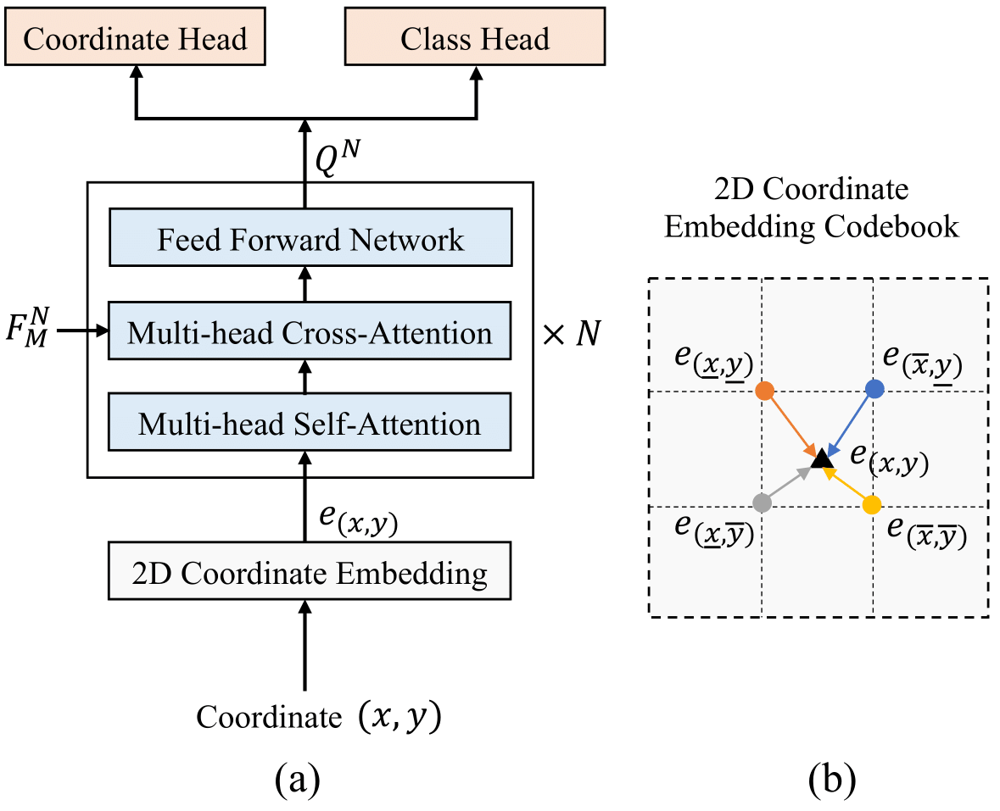
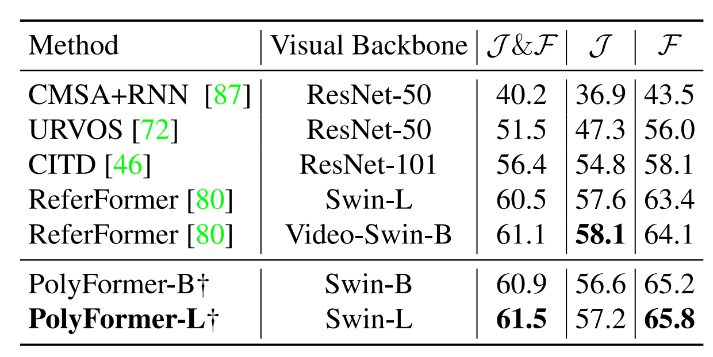
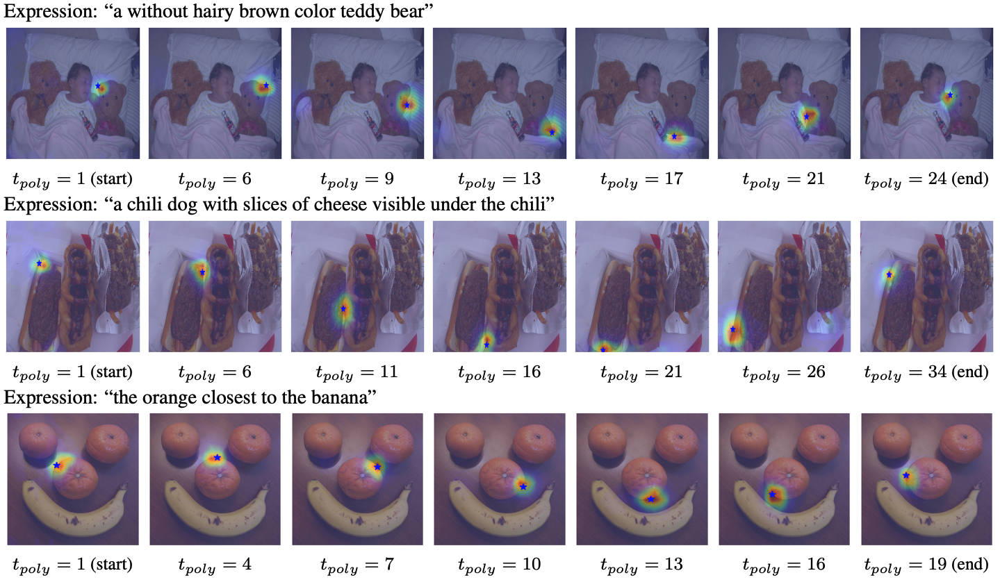

Figure 1. PolyFormer is a unified model for referring image segmentation (polygon vertex sequence) and referring expression comprehension (bounding box corner points). The polygons are converted to segmentation masks in the end.
In this work, instead of directly predicting the pixel-level segmentation masks, the problem of referring image segmentation is formulated as sequential polygon generation, and the predicted polygons can be later converted into segmentation masks. This is enabled by a new sequence-to-sequence framework, Polygon Transformer (PolyFormer), which takes a sequence of image patches and text query tokens as input, and outputs a sequence of polygon vertices autoregressively. For more accurate geometric localization, we propose a regression-based decoder, which predicts the precise floating-point coordinates directly, without any coordinate quantization error. In the experiments, PolyFormer outperforms the prior art by a clear margin, e.g., 5.40% and 4.52% absolute improvements on the challenging RefCOCO+ and RefCOCOg datasets. It also shows strong generalization ability when evaluated on the referring video segmentation task without fine-tuning, e.g., achieving competitive 61.5% J&F on the Ref-DAVIS17 dataset.

Figure 2. Overview of PolyFormer architecture. The model takes an image and its corresponding language expression as input, and outputs the floating-point 2D coordinates of bounding box and polygons in an autoregressive way.
PolyFormer has several innovative designs:
For the first time, we show that the polygon-based method surpasses mask-based ones across all three main referring image segmentation benchmarks, and it can also generalize well to unseen scenarios, including video and synthetic data.

Figure 3. The architecture of the regression-based transformer decoder (a). The 2D coordinate embedding is obtained by bilinear interpolation from the nearby grid points, as illustrated in (b).
Our regression-based decoder is unique for three critical designs:
Table 1. Comparison with the state-of-the-art methods on three referring image segmentation benchmarks.
Table 2. Comparison with the state-of-the-art methods on three referring expression comprehension benchmarks.

Table 3. Comparison with the state-of-the-art methods on RefDAVIS17. † Our model is trained on image datasets only. ReferFormer is trained on both image and video datasets.


Figure 4. The cross-attention maps of the decoder when generating the polygon. ★ is the 2D vertex prediction at each inference step.
Figure 5. The results of LAVT (top), SeqTR (middle), and PolyFormer (bottom) on RefCOCOg test set.

Figure 6. The results of LAVT (top), SeqTR (middle), and PolyFormer (bottom) on synthetic images generated by StableDiffusion.
@article{liu2023polyformer,
title={PolyFormer: Referring Image Segmentation as Sequential Polygon Generation},
author={Liu, Jiang and Ding, Hui and Cai, Zhaowei and Zhang, Yuting and Satzoda, Ravi Kumar and Mahadevan, Vijay and Manmatha, R},
journal={arXiv preprint arXiv:2302.07387},
year={2023}
}
This website is adapted from Nerfies, licensed under a Creative Commons Attribution-ShareAlike 4.0 International License.